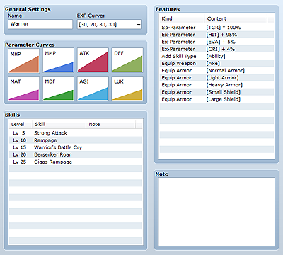
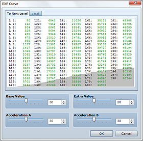
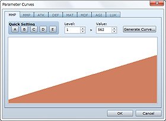

Class data defines the features and abilities of actors. Actors must belong to one of the available classes. The way they level up, how their parameters rise, the skills they can learn, and so on are determined by these settings. You can also assign class-specific features.

The name of the class. This text is displayed on the menu screen and at the top of the actor's status list screen while playing the game.

This setting is for the experience points required to level up. Actors gain one level each time they earn the amount of experience required for the next level. Leveling up raises parameters and enables the learning of skills.
Set the experience points required for leveling up by setting the following four values in the dialog box that appears when you click ... in the setting field. The To Next Level tab displays the experience points required to reach the next level along with a graph in the background. Use this information to help you make your settings. The Total tab displays the experience point totals for attaining each level.
Sets the base value for calculating the required experience points. Setting a smaller value reduces the required experience points overall.
Sets an extra value to add to the experience points necessary for each level.
Adjusts the degree of acceleration for the required experience points. Setting a larger value proportionally increases the required experience points as levels increase.
Adjusts the degree of acceleration for the required experience points. Setting a larger value increases the required experience points mainly at higher levels.
Sets parameters by level. Double-clicking a graph displays the Parameter Curves. See Setting Parameter Curves for more information.
Sets the skills that can be learned by leveling up. Double clicking the field displays a dialog box for specifying skills and the level at which they can be learned. Memo is for writing notes while creating your game.
The features given to the actors for which this class is set are displayed here. See Setting Features for more information.

In the Parameter Curves dialog box, specify parameters per level using the settings described below. Switch between the parameters you want to edit by clicking on their tabs. When you are done editing parameters, click the OK button to apply your settings (clicking Cancel will discard the settings you made).
Applies a predetermined value to the parameters for all levels. There are five value patterns (A through E). Apply the one you want by clicking its button.
Directly edit parameters per level. After specifying a level (1 to 99) in the Level box, enter 1 to 999 in the Value box for parameters at the specified level (enter 1 to 9999 for max HP/max MP).
Automatically calculates the level values between level 1 and level 99.
Clicking this button displays the Generate Curve dialog box where you enter 1 to 999 in the Level 1 and Level 99 boxes for the value at each level (enter 1 to 9999 for max HP/max MP).
Next, determine the growth type using the slider. The closer to Fast the slider is, the faster the growth rate (parameter increase), and the closer to Slow it is, the slower the growth rate. Clicking the OK button sets parameters according to the settings you made.
Displays a bar graph for the parameters set by level. Clicking/dragging on the display area changes level parameters at that location.